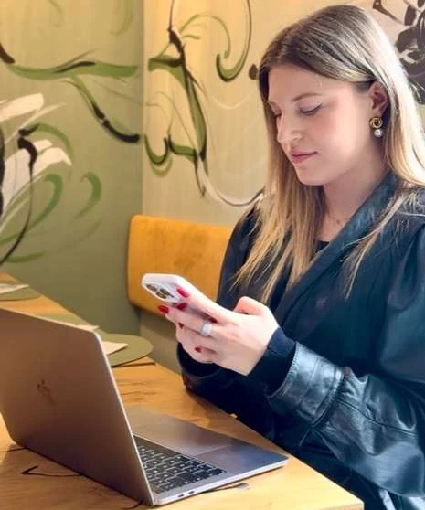
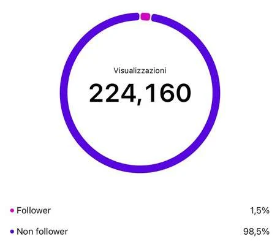

01 / STRATEGY
Social Media
Management
Gestione dei canali social, analisi, pianificazione editoriale, contenuti e monitoraggio delle performance.
Richiedi un preventivoAiuto brand e professionisti a trasformare la loro visione in una comunicazione digitale autentica, riconoscibile e strategica. Dall'idea al contenuto, con un approccio su misura.

Credo in una comunicazione che abbia qualcosa da dire. Non solo da mostrare.
Sono Giorgia Piatti, Digital Communication Consultant e fondatrice di Giorgia Social Studio. Dal 2020 mi occupo di social media e comunicazione digitale, unendo analisi, direzione creativa e attenzione ai dettagli.
Mi sono laureata in Fashion Marketing e Comunicazione allo IED di Milano nel 2022. Dal 2024 sviluppo come freelance progetti personalizzati per brand, aziende e professionisti.
Ogni brand ha una storia e ogni storia merita la strategia giusta. Scegli i servizi di cui hai bisogno: costruiremo insieme il percorso più adatto.
Gestione dei canali social, analisi, pianificazione editoriale, contenuti e monitoraggio delle performance.
Richiedi un preventivoIdeazione, produzione e montaggio di contenuti foto e video, storytelling digitale e contenuti dedicati al wedding.
Richiedi un preventivoSiti vetrina, landing page, aggiornamento di siti esistenti ed e-commerce con il supporto di specialisti esterni.
Richiedi un preventivoMoodboard, concept creativi, set styling, coordinamento dell'immagine e shooting con fotografi professionisti.
Richiedi un preventivoNewsletter, content marketing, progetti esperienziali e integrazione delle iniziative online e offline.
Richiedi un preventivoAffiancamento strategico e formazione social per aziende e professionisti che vogliono comunicare con maggiore consapevolezza.
Richiedi un preventivoUna selezione di contenuti realizzati per mondi diversi, ma con una stessa attenzione all'identità. Le immagini provengono dal portfolio professionale dello studio.
Il lavoro creativo ha ancora più valore quando viene misurato. Il portfolio dello studio documenta performance, visualizzazioni e coinvolgimento raggiunti dai contenuti.
Costruiamo la tua strategia
Dato mostrato nel portfolio professionale. Esempio di risultato passato, non garanzia di performance future.
Un percorso chiaro, costruito intorno a chi sei, cosa fai e dove vuoi arrivare. Perché una buona strategia inizia sempre dall'ascolto.
Conosciamo il tuo brand, le persone a cui parli e gli obiettivi che vuoi raggiungere.
Definiamo tono di voce, posizionamento, contenuti e piano editoriale.
Diamo forma alle idee, curando ogni dettaglio visivo e narrativo.
Osserviamo i risultati, impariamo dai dati e affiniamo il percorso.
Ogni realtà è diversa. Compila il questionario: mi aiuterà a capire le esigenze della tua attività e a preparare una proposta dettagliata e personalizzata.
Scrivimi direttamente a giorgiasocialstudio@gmail.com
Qualche risposta prima di iniziare. Se hai un dubbio specifico, scrivimi.
Certo. Puoi raccontarmi se hai bisogno di una consulenza, di contenuti specifici o di una gestione social più completa. La proposta sarà costruita sulle tue esigenze.
Parto dalle informazioni sulla tua attività, sugli obiettivi, sui canali e sui servizi richiesti. Dopo aver valutato il progetto, posso formulare un'offerta personalizzata. Non ci sono prezzi standard indicati sul sito.
Sì, tra le esperienze presentate nel portfolio ci sono anche aperture di profili social da zero e definizione dell'identità comunicativa iniziale.
Sì. Lo studio propone landing page e siti vetrina, oltre alla content creation nel mondo wedding. Per e-commerce e shooting fotografici professionali può avvalersi di collaboratori specializzati.
Puoi scrivere a giorgiasocialstudio@gmail.com oppure telefonare al +39 379 1154 750.
Hai un'idea, una domanda o desideri un confronto? Raccontami cosa hai in mente. Sarà un piacere conoscerti.